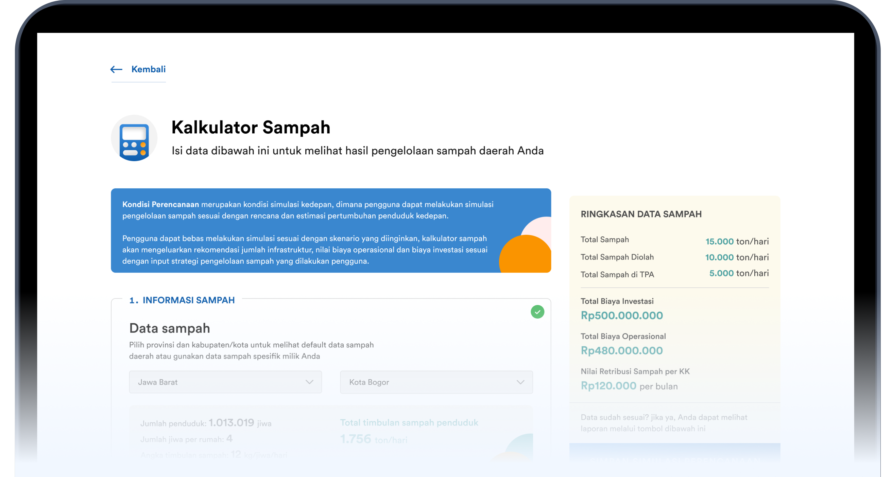

Pemberitahuan
Saat ini anda menggunakan mobile device, untuk pengalaman penggunaan yang lebih optimal, disarankan untuk menggunakan perangkat berbasis desktop.
Kalkulator Digital Perhitungan Penyelenggaraan Penanganan Sampah
Kalkulator Digital sebagai alat bantu Perhitungan Kebutuhan Total Nilai Biaya dan Tarif Retribusi dalam Penyelenggaraan Penanganan Sampah
Diprakasai oleh :